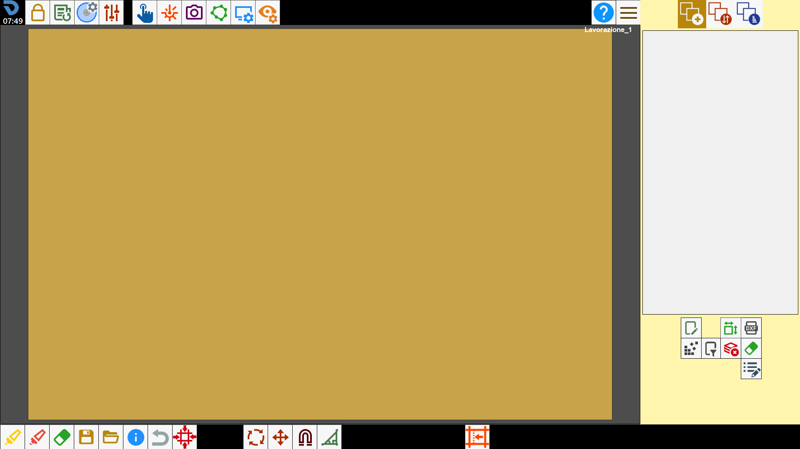
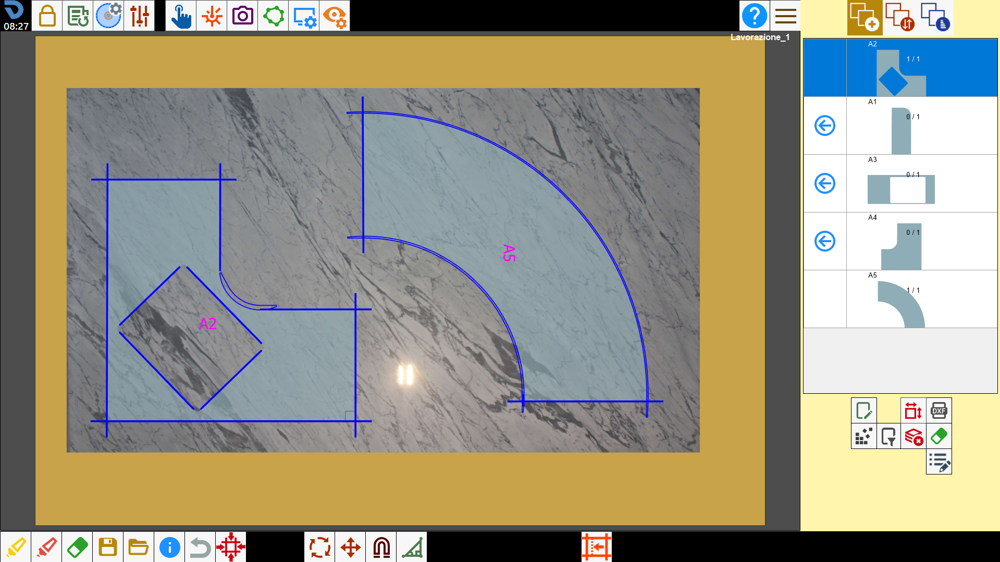
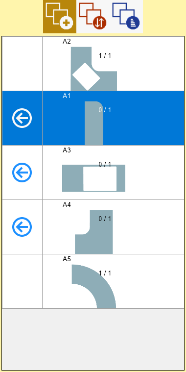

Il sistema è stato progettato per facilitare l’operatore nella programmazione dei tagli automatici. Attraverso il software è possibile:
Stabilire la posizione della lastra nell’area di lavoro della macchina e creare il perimetro del materiale per la lavorazione
Creare pezzi attraverso figure parametriche
Importare figure realizzate con altri CAD
Generare una lista di pezzi da lavorare
Ricercare la miglior posizione dei pezzi sulla lastra
Impostare funzioni speciali di taglio
Programmare l’ordine di taglio e creare la movimentazione macchina
Monitorare a video l’esecuzione dei tagli

Area di lavoro e lista dei pezzi
Di seguito è riportata una rappresentazione tipica dell’area di lavoro di Parametrix con la lista dei pezzi importati già popolata e una immagine della lastra acquisita.

Lista pezzi inseriti
Quando viene creato un pezzo il programma lo aggiunge sulla lista pezzi; dalla lista è possibile inserirli sull’area di lavoro oppure fare alcune modifiche al pezzo e controllare il numero di pezzi mancanti alla lavorazione.

Posizionamento pezzi
Parametrix permette di posizionare pezzi dentro l’area di lavoro della macchina per creare il file di taglio.
Una volta acquisita la lastra, creato il perimetro e creati i pezzi della lavorazione, bisogna importare i pezzi all’interno della lastra, con il pulsante sulla tabella di pezzi viene messo il pezzo all’interno dell’area di lavoro. È possibile lavorare con 1 o più pezzi contemporaneamente.
Nel caso in cui i pezzi non siano perfettamente all’interno della lastra comparirà un segnale di attenzione\pericolo nell’angolo in alto a sinistra. |
Barra superiore
Nella parte superiore della schermata, al centro e sulla sinistra sono visibili i seguenti pulsanti, preceduti dal logo e l’ora segnata:
La barra superiore dei comandi viene integrata con alcuni pulsanti che verranno illustrati in seguito:
 | Parametri utente |
 | Nuova lavorazione |
 | Parametri utensile |
Pannello parametri di lavorazione della lastra | |
Accesso al comando manuale | |
Gestione del laser | |
Aggiungi foto al banco | |
Perimetro della lastra | |
 | Gestione della visualizzazione del banco |
Visualizzazione delle entità di lavoro |
Sezione laterale
I pulsanti situati in alto a destra permettono all’operatore di cambiare la schermata di Parametrix.

Ogni schermata è responsabile di un particolare aspetto della lavorazione di una lastra.
 | Posizionamento dei pezzi
|
Gestione dell’ordine di taglio dei pezzi | |
 | Ottimizzazione e gestione dei tagli
|
Sulla destra in basso si trovano i seguenti pulsanti le cui funzionalità verranno viste in seguito.
 | Modifica pezzo |
Attiva/disattiva pezzi standard | |
 | Creazione pezzo |
Ordina o filtra pezzi | |
Cancella lista di pezzi | |
 | Cancella pezzo |
Modifica proprietà aggiuntive pezzo |
Barra inferiore
All’apertura della funzionalità “Parametrix” la barra inferiore subirà alcune modifiche come mostrato di seguito:

Questa barra viene integrata con questi pulsanti:
Selezione multipla | |
Seleziona tutto | |
Rimuovi pezzo | |
 | Salvataggio |
 | Carica |
Pannello informazioni | |
 | Ripristina modifica |
Macchina su taglio | |
 | Rotazione pezzo |
Muovi pezzi | |
Magnetizzare pezzi | |
Taglio inclinato | |
Modifica pezzo standard |